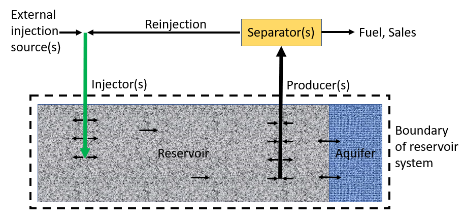

ECLIPSE provides a mechanism for tracking the net amount of carbon produced or injected during a simulation.
This is purely a mechanism for tracking the movement of carbon into or out of the reservoir. It is not a full carbon accounting mechanism because it does not account for the carbon that is consumed or generated by the operation of the reservoir (for example, the drilling of wells, the operation of plants and wells, or the transportation of resources and fluids) because the required information for such a calculation is not typically available to the simulator.
For the purposes of net carbon production/injection tracking, only the movement of components that contain carbon into or out of the reservoir system is of interest. The phase in which these components exist is unimportant because, regardless of the phase, the component always contains the same amount of carbon. The movement or location of the carbon within the reservoir system is also unimportant. For example, it is not required to track:
The wells are the only entry and exit points for carbon in the reservoir system. Therefore, net carbon production/injection is calculated as the difference between the total moles of carbon produced at the well heads and the total moles of carbon injected at the well heads (see figure 802.1 where the well head flows are the only ones that cross the boundary of the reservoir system).
